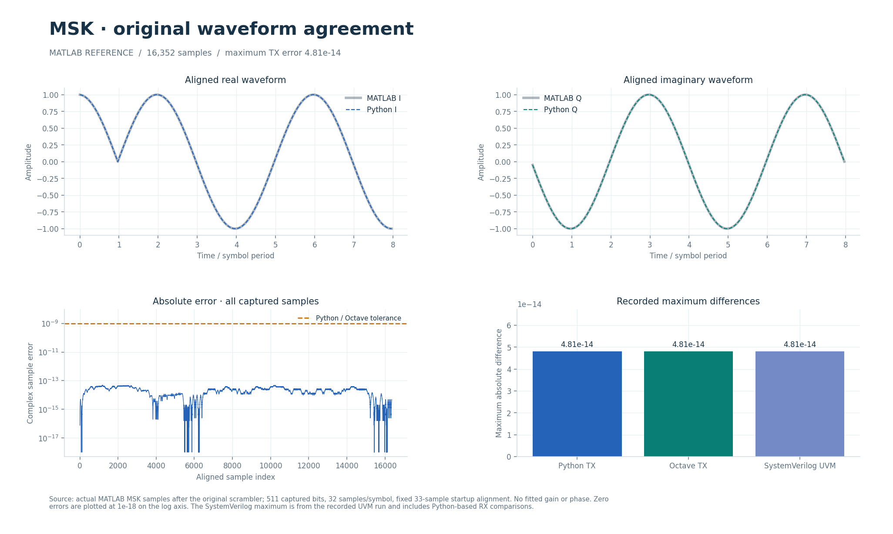

01
A DIRECT TRANSMITTER REFERENCE
MSK agrees with the original waveform.
16,352 captured MATLAB samples match Python, Octave and SystemVerilog, with an error of about 4.8 × 10⁻¹⁴. The test uses 32 samples per symbol and the original 33-sample startup delay. Its input is captured after the scrambler.

TX is compared with MATLAB. UVM receiver expectations still come from Python.Open SVG ↗